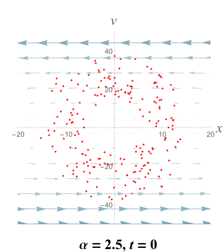
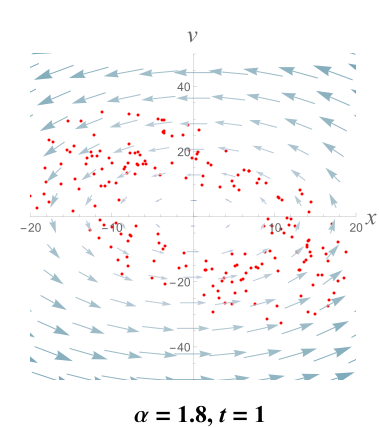
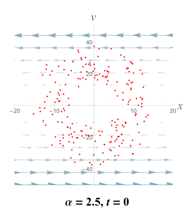
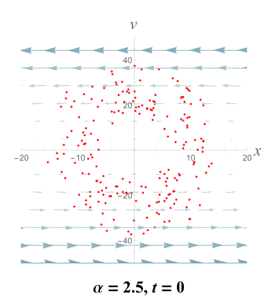
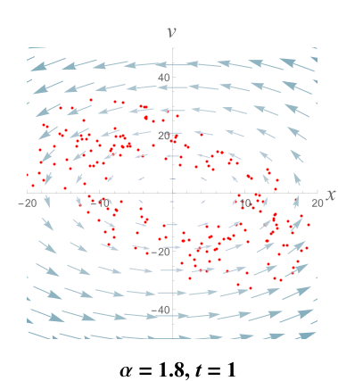
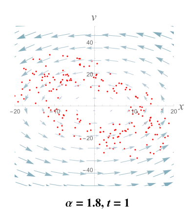

Astrophysicists generally accept that there is a massive but invisible halo of dark matter around most galaxies. But how do we study something we can't see?
One way to study dark matter is to observe its gravitational effect on visible objects: stars. And we're in luck, because the spacecraft Gaia is currently observing the movement of one billion stars the Milky Way. These movements contain large amounts of statistical information about the gravitational potential they are traveling in. If we had knew this gravitational potential, then we could find the distribution of matter in the Milky Way, using Poisson's equation.
We've created a simple, numerical algorithm to extract the gravitational potential from the data. Given a set of observed positions and velocities of particles (stars), we are able to infer the potential in which they are traveling.
The fundamental assumption: phase-mixing
The algorithm we developed relies on the system being phase-mixed. Suppose we have 200 particles initially close together in phase space. What happens if they are released in a potential of, say, \Phi(x) = \frac{1}{2}|x|^\alpha, for \alpha = 1.5?
The phase-mixing of 200 particles.
Notice that as time progresses, the initial configuration is lost. The particles approach a configuration that is macroscopically steady-state, or phase-mixed.
Importantly, notice how the same set of particles evolve to different steady-state "shapes" when they are evolved under different potentials (e.g., different values of \alpha).
Steady-state configurations for different potentials.
This property, that different potentials produce different steady-state configurations, will turn out to be crucial to our method.
The insight behind the inference algorithm
A sample data set: particles observed from an unknown potential.
Suppose that we are given the positions and velocities of particles taken from an unknown potential. Our aim is to guess which potential these particles come from. We may assume that they are drawn from a phase-mixed system.
Our algorithm relies on the following insight. Let's assume we know that the particles we observe are in a steady-state configuration. Then if we evolve them under the correct potential, they will remain in the same, steady-state configuration. Conversely, if we evolve them under an incorrect potential, they will evolve towards a different configuration!
Then one algorithm to find the correct potential is to simply to guess a bunch of different potentials, evolve the observed particles under each of these trial potentials, and see which potential best preserves the original configuration. The following figure illustrates the evolution of the particles in Figure 3 under different potentials.


The evolution of the observed particles under different potentials.
In this simple example, the particles most likely come from an \alpha = 1.5 potential, because the configuration of the particles evolved under that potential most resembles the original, observed distribution.
The likelihood function
Instead of choosing the best potential by eye, we can construct a function to quantify how good a trial potential is. Let x_1, v_1, \ldots, x_n, v_n be a set of n observed positions and velocities. Then the likelihood that these observations came from a particular potential \Phi is
L(\Phi \,|\, x_1,v_1,\ldots,x_n,v_n) = \prod_i f(x_i, v_i \,|\, \Phi),
where we've defined
f(x,v \,|\, \Phi) = \frac{1}{T}\int_0^T\sum_i K(x_i(t) - x)\,K(v_i(t) - v) \,dt,
where x_i(t) and v_i(t) denote the position and velocity of the ith particle evolved to time t under the potential \Phi, and K(\cdot) is a kernel function, e.g. a Gaussian centered at 0. This function is greatest for potentials that preserve the original configuration.
Summary of the algorithm
Our algorithm to infer the potential from a set of observed positions and velocities is as follows.
Guess a trial potential by choosing a set of values for the parameters of a potential. One intelligent way of choosing parameters is using the Metropolis-Hastings algorithm.
Calculate the likelihood of observing the data under the chosen potential, according to the formula in the previous section.
Repeat steps 1–2 indefinitely. When satisfied, we can report either the single set of parameters with the maximum likelihood, or a range of parameter values with high likelihoods.
Preliminary results
We have tested the algorithm for the two-dimensional logarithmic potential given by
\Phi(x,y) = \log(x^2 + \frac{y^2}{q^2} + R_c^2),
where q and R_c are parameters that describe the shape of the potential. It is a simple model for real galaxies.
A contour plot of the likelihood of the parameters. Red is higher; contours are at 2^{-2^i} for i=0,\ldots,13.
We simulated mock data from this potential and tested the inference algorithm on the resulting "observations." The results for n = 10^4 particles and true parameters of q^2=0.8 and R_c^2=1.5 are shown in the contour plot to the right.
The likelihood correctly peaks near the true values of the parameters, meaning that the algorithm is successful!
Advantages and future work
Our method has two novel advantages:
General: This algorithm requires only that the particles are in steady-state, whereas older methods require improbable assumptions, e.g. that the potential is Liouville-integrable.
Intuitive: It has an intuitive interpretation in terms of phase-mixing.
Nevertheless, there are several challenges that should be addressed before applying the algorithm to the Gaia data:
Computation time: An application to 10^9 particles, although feasible, currently requires a large supercomputer cluster.
Noise: The likelihood function is currently quite noisy, which may prevent accurate inference of parameters.
Lack of error bounds: It is currently unclear how to accurately bound the error of the estimated paramters.


 

 
